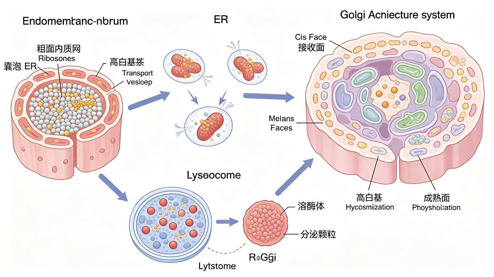

高尔基体概述与极性结构
高尔基体（Golgi apparatus / Golgi complex）由意大利学者 Camillo Golgi 于 1898 年用银染法在猫头鹰神经细胞中首次发现（最初称"内网器" apparatus reticolare interno），是蛋白质糖基化修饰、分选和膜泡运输的中心枢纽。高尔基体由一系列扁平膜囊（cisterna，复数 cisternae）堆叠而成，通常每堆含 3-10 个膜囊，呈明显的极性结构。
一、高尔基体的极性区室（由 ER 侧→质膜侧）：
- 顺面（cis face / CGN，cis-Golgi network，顺面高尔基网）：面向内质网，是"入口"。接收来自 ER 的 COPII 包被膜泡（ER→Golgi 顺行运输）。顺面含有GlcNAc-磷酸转移酶，负责溶酶体酶 M6P 标记的起始。顺面标志蛋白：GM130（golgin-160 家族，连接膜囊与膜泡拴系）、p115。
- 中间膜囊（medial cisternae）：含多种糖基转移酶，进行糖链的延伸与修剪（如甘露糖苷酶 Man I/Man II 切除甘露糖，GlcNAc 转移酶添加 N-乙酰葡糖胺）。中间膜囊标志蛋白：mannosidase II（Man II）、GlcNAc 转移酶 I（GnT-I）。
- 反面（trans face）：面向质膜，是"出口"。最后几个膜囊及反面高尔基网（TGN，trans-Golgi network）——TGN 是高度分支的管网，是蛋白质分选站。反面标志蛋白：TGN38、半乳糖基转移酶（GalT）、唾液酸转移酶（SialylT）。
二、标志酶与标志蛋白（考点）：
- 顺面 cis-Golgi 标志：GM130（膜周蛋白，参与膜泡拴系拴系与高尔基体堆叠结构维持）。
- 反面 TGN 标志：TGN38（在 TGN 与质膜间循环的膜蛋白）。
- 各功能区室的酶分布体现"流水线"加工顺序：cis（Man II, GnT-I）→ medial（GnT-II, FucT 岩藻糖转移酶）→ trans（GalT 半乳糖基转移酶, SialylT 唾液酸转移酶）。
三、高尔基体与膜泡运输的连接：
- 顺面接收 COPII 膜泡（ER→Golgi，顺行）。
- COPI 膜泡介导高尔基体各膜囊间及 Golgi→ER 的逆行运输（回收逃逸的 ER 驻留蛋白，如带 KDEL 序列的 BiP、PDI）。
- 反面 TGN 出 网格蛋白（clathrin）包被膜泡，分选至溶酶体（M6P 受体介导）、内体或质膜（组成型分泌）；调节型分泌细胞则将分泌蛋白包装到分泌颗粒。

| 极性区室 | 位置/朝向 | 接收/出芽膜泡 | 主要功能 | 标志蛋白/酶 |
|---|---|---|---|---|
| 顺面 cis (CGN) | 面向 ER（入口） | 接收 COPII 膜泡 | M6P 标记起始；蛋白质入站 | GM130、p115 |
| 中间膜囊 medial | 中段 | 膜囊间 COPI | 糖链加工（切甘露糖、加 GlcNAc） | Man II、GnT-I |
| 反面 trans | 面向质膜（出口） | — | 末端糖基化（加 Gal、SA） | GalT、SialylT |
| TGN 反面高尔基网 | 反面末端（分选站） | 出 clathrin 膜泡 | 蛋白质分选（溶酶体/质膜/分泌） | TGN38 |
高尔基体的功能
高尔基体是细胞内"加工、分拣、发送"的中心枢纽，三大核心功能：
功能一：蛋白质和脂质的进一步糖基化修饰（详见 §3）。高尔基体对 ER 起始的 N-连接糖链进行"修剪+延伸"加工，并起始 O-连接糖基化；同时合成糖脂（鞘糖脂）。
功能二：蛋白质分选（TGN 是核心分选站）
- 溶酶体酶 → 溶酶体：溶酶体酶带 M6P（甘露糖-6-磷酸）标记，在 TGN 被 M6P 受体识别，包装进 clathrin 包被膜泡→内体（低 pH 释放）→溶酶体。
- 分泌蛋白 → 组成型分泌（constitutive secretion）：所有细胞持续进行。TGN 出芽的分泌泡直接与质膜融合，释放内容物（如细胞外基质蛋白、质膜蛋白、可溶性分泌蛋白如白蛋白、抗体），不需信号触发。
- 调节型分泌（regulated secretion）：特化分泌细胞（内分泌细胞、神经元、外分泌腺）才有。分泌蛋白在 TGN 被浓缩包装进分泌颗粒（secretory granule），在质膜附近贮存，待信号（如激素→Ca²⁺ 内流）触发后才与质膜融合释放。例：胰岛素分泌、神经递质释放、消化酶原颗粒。
- KDEL 回收：ER 驻留蛋白（BiP、PDI 等）C 端含 KDEL（Lys-Asp-Glu-Leu）序列，若意外被运到高尔基体，顺面 KDEL 受体识别后通过 COPI 膜泡逆行回收回 ER。
功能三：膜泡运输枢纽：高尔基体是内膜系统膜泡运输的中转站——上游接收 ER 来的 COPII 膜泡，下游出 clathrin 膜泡分选至各目的地，自身各膜囊间及向 ER 有 COPI 逆行回收。膜泡运输的分子机制（包被蛋白、Rab/SNARE）详见蛋白质分选与膜泡运输专章（ch3-2-7）。
功能四（其它）：①合成鞘脂（鞘磷脂、鞘糖脂如神经节苷脂 GM1/GD1a）；②蛋白质的蛋白酶加工（如将胰岛素原 proinsulin 切成胰岛素 + C 肽，发生在分泌颗粒中）；③细胞壁合成（植物细胞高尔基体合成细胞壁多糖如果胶、半纤维素，并包装在囊泡运往质膜）。
高尔基体与蛋白质糖基化
糖基化（glycosylation）是最常见的蛋白质翻译后修饰之一，分N-连接和O-连接两大类。高尔基体是糖链加工的核心场所。
一、N-连接糖基化（N-linked glycosylation）
- 起始：在 rER 中由 OST 将 Glc₃Man₉GlcNAc₂ 整体转移到 Asn-X-Ser/Thr 的 Asn 上（见内质网章）。
- 高尔基体加工：进入高尔基体后，糖链经历"修剪+延伸"——①甘露糖苷酶（Man I / Man II）切除部分甘露糖（Man）残基；②GlcNAc 转移酶（GnT-I, GnT-II）添加 N-乙酰葡糖胺（GlcNAc）；③岩藻糖转移酶（FucT）添加岩藻糖（Fuc）；④trans 面的半乳糖基转移酶（GalT）添加半乳糖（Gal）；⑤唾液酸转移酶（SialylT）添加唾液酸（SA / Neu5Ac，N-乙酰神经氨酸）。最终形成"复杂型（complex type）"或"高甘露糖型（high-mannose type）"或"杂合型"寡糖链。
- 糖链末端常以唾液酸（SA）封端，带负电荷，影响糖蛋白的电荷和半衰期。
二、O-连接糖基化（O-linked glycosylation）
- 起始：主要在高尔基体中进行（与 N-连接在 rER 起始不同）。糖基逐个添加到Ser/Thr 残基的 -OH 上（通过 O-糖苷键）。
- 最常见的是粘蛋白型（mucin-type）O-糖基化：由 GalNAc 转移酶起始，将 GalNAc（N-乙酰半乳糖胺）加到 Ser/Thr，再延伸 Gal、SA 等。粘蛋白（mucin）是黏液的主要糖蛋白。
三、糖蛋白的功能：
- 辅助蛋白质折叠与稳定性：糖链增加蛋白溶解性、抗蛋白酶降解，参与 ER 内 calnexin/calreticulin 折叠循环。
- 细胞识别与黏附：糖链是细胞表面的"身份标签"，参与细胞-细胞识别、免疫识别（如选择素 selectin 识别白细胞糖链介导归巢）、病原体结合（如流感病毒血凝素 HA 识别细胞表面唾液酸）。
- 血型 ABO 抗原：ABO 血型抗原是红细胞表面糖脂/糖蛋白的糖链末端结构差异。H 抗原（O 型基础）：Fuc-Gal-...；A 型：GalNAc 转移酶在 H 抗原末端加 GalNAc；B 型：Gal 转移酶在 H 抗原末端加 Gal；AB 型同时有 A、B 酶；O 型无 A/B 酶，仅 H 抗原。糖基转移酶基因决定血型。
- 糖蛋白激素：如 FSH、LH、TSH、hCG 的 α/β 亚基均经 N-连接和 O-连接糖基化，糖链影响其半衰期和受体结合。
| 特征 | N-连接糖基化 | O-连接糖基化 |
|---|---|---|
| 起始场所 | 粗面内质网（rER） | 高尔基体 |
| 连接氨基酸 | Asn（天冬酰胺）侧链酰胺氮 | Ser/Thr（丝/苏氨酸）羟基 |
| 识别序列 | Asn-X-Ser/Thr（X≠Pro） | 无严格共有序列 |
| 糖链添加方式 | 预组装核心（Glc₃Man₉GlcNAc₂）整体转移（OST） | 糖基逐个添加（GalNAc 转移酶起始） |
| 糖载体 | 多萜醇焦磷酸（dolichol-P-P） | 核苷酸糖（UDP-GalNAc 等） |
| 加工场所 | rER 起始 → 高尔基体加工修剪 | 高尔基体起始并延伸 |
| 典型代表 | 分泌蛋白、膜蛋白、溶酶体酶 | 粘蛋白（mucin）、血型抗原、糖蛋白激素 |
溶酶体的结构与类型
溶酶体（lysosome）是单层膜包被的酸性水解细胞器，由 Christian de Duve 于 1955 年通过差速离心发现（1974 年诺贝尔生理学或医学奖，与 Claude、Palade 共享）。溶酶体是细胞内的"消化车间"。
一、溶酶体的结构特征：
- 单层膜（与线粒体、叶绿体的双层膜不同）。
- 酸性环境 pH 4.6-5.0：溶酶体内呈酸性，由膜上 V-ATPase 维持。
- 含 60 余种酸性水解酶：蛋白酶（组织蛋白酶 cathepsin D/B/L 等）、核酸酶（DNase、RNase）、脂酶（磷脂酶、鞘脂酶）、糖苷酶（α/β-葡糖苷酶、氨基己糖苷酶等）、磷酸酶、硫酸酯酶等。这些酶的最适 pH 为酸性，与溶酶体腔内 pH 一致。
- 标志酶：酸性磷酸酶（acid phosphatase, ACP）——最常用的溶酶体标志酶，组化染色（如 Gomori 铅法）可定位溶酶体。其它重要酶：组织蛋白酶（cathepsin）、β-葡糖脑苷脂酶、α-葡萄糖苷酶等。
- 溶酶体膜含高度糖基化的溶酶体相关膜蛋白（LAMP-1、LAMP-2、LIMP 等），其糖链形成"糖衣"保护膜不被自身水解酶消化。LAMP-2 还参与自噬（CMA 途径受体）。
二、溶酶体酸性 pH 的维持——V-ATPase（核心考点）：
- V 型 ATPase（V-ATPase）：位于溶酶体膜（也见于内体、高尔基体、突触囊泡等），利用 ATP 水解的能量将 H⁺ 从细胞质泵入溶酶体腔，维持腔内 pH 4.6-5.0。V-ATPase 是旋转式分子马达（rotary motor），结构上分 V₀（膜内质子通道）和 V₁（胞质侧催化水解 ATP）两部分，与 F-ATPase（ATP 合酶）结构同源但功能相反（F-ATPase 利用 H⁺ 梯度合成 ATP，V-ATPase 消耗 ATP 建立 H⁺ 梯度）。
- Cl⁻ 通道（ClC-7 等）提供电荷平衡，使 H⁺ 持续泵入。
三、溶酶体的类型（按功能状态分类）：
- 初级溶酶体（primary lysosome）：刚从高尔基体 TGN 出芽形成，含水解酶但尚未与底物融合，处于"待命"状态。
- 次级溶酶体（secondary lysosome）：初级溶酶体与底物（吞噬体/自噬体/内体）融合后形成，正在消化。又分：
- 异噬溶酶体（heterophagolysosome / heterolysosome）：消化胞外来源物质（经吞噬/胞吞摄入的细菌、颗粒等）。
- 自噬溶酶体（autophagolysosome / autolysosome）：消化自身衰老细胞器或蛋白质聚集体（经自噬途径）。
- 残余体（residual body）：消化完成后剩余的不易降解物质（如脂褐素 lipofuscin、髓样结构 myelin figure）。残余体可经胞吐排出，或长期残留于细胞（如神经元脂褐素随年龄积累）。
溶酶体的功能与自噬
溶酶体承担细胞内消化、物质循环、细胞更新等多重功能：
功能一：异噬作用（heterophagy）
- 消化经胞吞/吞噬摄入的胞外来源物质。吞噬细胞（巨噬细胞、中性粒细胞）吞噬细菌等形成吞噬体（phagosome），与初级溶酶体融合为异噬溶酶体进行消化杀灭。内体（endosome）途径：胞吞物质经早期内体→晚期内体（pH 降低）→与溶酶体融合消化。
功能二：自噬作用（autophagy）——重点
- 消化自身衰老、受损细胞器（如线粒体自噬 mitophagy、内质网自噬 reticulophagy）和错误折叠蛋白聚集体，维持细胞稳态和更新。大隅良典（Yoshinori Ohsumi）因阐明自噬分子机制获 2016 年诺贝尔生理学或医学奖。
- 巨自噬（macroautophagy）——最主要类型：①隔离膜（phagophore，双层膜）包裹胞质成分（受损细胞器、蛋白聚集体）→ ②延伸闭合形成自噬体（autophagosome）（双层膜）→ ③与溶酶体融合为自噬溶酶体（autolysosome / autophagolysosome）→ ④内容物被水解酶降解，产物（氨基酸、脂肪酸等）回收再利用。
- LC3-II 标记：LC3（microtubule-associated protein 1 light chain 3，Atg8 同源物）是自噬体的标志蛋白。前体 pro-LC3 被 Atg4 切割成 LC3-I（胞质可溶），再经 Atg7（类 E1）+ Atg3（类 E2）催化，与磷脂酰乙醇胺（PE）偶联形成LC3-II，锚定于自噬体膜。LC3-II 的量与自噬体数量正相关，是检测自噬活性的金标准。
- 自噬调控——mTOR 与 AMPK：mTOR（雷帕霉素靶蛋白）是自噬的负调控主开关——营养充足时 mTORC1 活化、磷酸化 ULK1/Atg1 抑制自噬；饥饿/能量不足时 mTOR 被抑制、AMPK 活化（AMP/ATP 升高）→ ULK1 活化→启动自噬。雷帕霉素（rapamycin）抑制 mTOR 从而诱导自噬。
- 微自噬（microautophagy）：溶酶体膜直接内陷吞噬胞质成分。
- 分子伴侣介导自噬（CMA）：Hsc70 识别带 KFERQ 模体的底物蛋白，通过溶酶体膜 LAMP-2A 受体介导其直接进入溶酶体降解（无需自噬体）。
功能三：胞外消化与特殊作用
- 破骨细胞：骨吸收时，破骨细胞将溶酶体酶分泌到骨吸收陷窝（ruffled border），溶解骨基质（含酸性环境 + 组织蛋白酶 K 降解胶原）。
- 受精：精子顶体（acrosome）是特化的溶酶体，受精时释放透明质酸酶和顶体素，溶解卵子周围的放射冠和透明带，使精子穿透。
- 自溶作用（autolysis）：溶酶体破裂释放水解酶消化细胞自身——如蝌蚪变态时尾部退化、月经期子宫内膜脱落、乳腺退乳。
功能四：溶酶体酶的 M6P 分选途径（核心考点）
- 合成：溶酶体酶在 rER 合成（与分泌蛋白同样经共翻译转运进入 ER 腔），并经 N-连接糖基化获得高甘露糖型糖链。
- M6P 标记：在顺面高尔基体，GlcNAc-磷酸转移酶（GlcNAc phosphotransferase）识别溶酶体酶特有的信号斑（signal patch）（酶折叠后表面形成的空间构象信号，非线性序列），将 GlcNAc-磷酸（GlcNAc-P）加到糖链的甘露糖残基上。
- 随后磷酸二酯酶切除 GlcNAc，暴露出甘露糖-6-磷酸（M6P）标记。
- 识别分选：在TGN，M6P 受体（MPR，mannose-6-phosphate receptor，有 CI-MPR 和 CD-MPR 两种）识别并结合带 M6P 标记的溶酶体酶。
- 运输：受体-酶复合物被包装进网格蛋白（clathrin）包被膜泡，运往内体（endosome）。
- 释放：内体的酸性环境（pH ~6.0）使 M6P 受体构象改变、释放溶酶体酶；受体通过回收途径返回 TGN 循环利用。
- 内体进一步酸化成熟为溶酶体（pH 降至 ~5.0），酶激活开始工作。
溶酶体相关疾病
溶酶体贮积症（lysosomal storage diseases, LSDs）：因某种溶酶体水解酶（或其激活蛋白、转运蛋白）缺陷，导致特定底物在溶酶体中积累，引起细胞功能障碍。多为常染色体隐性遗传。竞赛常考的 4 种：
1. 泰-萨氏病（Tay-Sachs 病，GM2 神经节苷脂贮积症）
- 缺陷酶：氨基己糖苷酶 A（hexosaminidase A, HexA）（α亚基突变）。
- 底物积累：神经节苷脂 GM2 在神经细胞溶酶体中积累。
- 临床表现：进行性神经退行性变、肌张力减退、失明（"樱桃红斑" cherry-red spot，眼底检查视网膜黄斑周围神经节苷脂沉积致苍白、中央樱桃红）、癫痫，多在婴幼儿期发病，常致夭折。Ashkenazi 犹太人群携带率高。
2. 戈谢病（Gaucher 病，葡糖脑苷脂贮积症）
- 缺陷酶：葡糖脑苷脂酶（glucocerebrosidase / β-葡糖脑苷脂酶，GBA 基因）。
- 底物积累：葡糖脑苷脂（glucosylceramide / 葡糖神经酰胺）在巨噬细胞溶酶体中积累，形成特征性的"戈谢细胞"（胞质呈皱纹纸样）。
- 临床表现：肝脾肿大、骨痛、贫血、血小板减少。分型：Ⅰ型（非神经元病型，最常见，可酶替代疗法治疗）；Ⅱ/Ⅲ型累及神经系统。戈谢病是最常见的溶酶体贮积症。
3. 庞贝病（Pompe 病，糖原贮积症 II 型）
- 缺陷酶：酸性 α-1,4-葡萄糖苷酶（acid α-glucosidase / GAA，溶酶体 α-葡糖苷酶）。
- 底物积累：糖原在溶酶体中积累（无法被溶酶体降解），主要累及心肌和骨骼肌（因这些细胞糖原代谢活跃）。
- 临床表现：肌无力、心肌肥大（肥厚性心肌病）、呼吸困难。婴儿型病情重，多死于心肺衰竭；晚发型进展较慢。庞贝病是唯一的糖原贮积症中属于溶酶体病的（其它糖原贮积症多为糖原代谢酶缺陷，不在溶酶体）。
4. I-细胞病（inclusion-cell disease，粘脂贮积症 II 型，mucolipidosis II）
- 缺陷酶：GlcNAc-磷酸转移酶（M6P 标记的关键酶）。
- 机制：所有溶酶体酶无法被 M6P 标记→无法被 TGN 的 M6P 受体识别分选→被错误地经组成型分泌途径分泌到细胞外。结果：细胞内缺乏溶酶体酶，多种底物在溶酶体中积累形成包涵体（inclusion body）；血液中溶酶体酶活性异常升高。
- 临床表现：多发骨骼畸形、生长迟缓、面容粗陋、智力低下，多在幼儿期死亡。I-细胞病是理解 M6P 分选途径的"反面教材"。
| 疾病 | 缺陷酶/蛋白 | 积累底物 | 主要累及 | 特征 |
|---|---|---|---|---|
| Tay-Sachs 病 | 氨基己糖苷酶 A (HexA) | 神经节苷脂 GM2 | 神经细胞 | 樱桃红斑,进行性神经退行,婴儿期 |
| Gaucher 病 | 葡糖脑苷脂酶 (GBA) | 葡糖脑苷脂 | 巨噬细胞 | 戈谢细胞(皱纹纸样),肝脾肿大,最常见,酶替代疗法 |
| Pompe 病 | 酸性 α-1,4-葡萄糖苷酶 (GAA) | 糖原 | 心肌、骨骼肌 | 糖原贮积症 II 型,唯一溶酶体性糖原病 |
| I-细胞病 | GlcNAc-磷酸转移酶 | 多种底物(M6P 标记丧失) | 全身(成纤维细胞等) | 酶错分泌胞外,胞内包涵体,血酶活性升高 |
过氧化物酶体
过氧化物酶体（peroxisome / microbody）是单层膜包被的细胞器，直径约 0.2-1.0 μm，含氧化酶和过氧化氢酶。注意：过氧化物酶体不属于内膜系统（其蛋白直接从细胞质输入，非经 ER-Golgi 途径），也无 DNA 和核糖体（与线粒体、叶绿体不同）。
一、核心酶：
- 氧化酶（oxidase）：催化底物氧化，将电子交给 O₂ 生成 H₂O₂（过氧化氢，有毒）。如尿酸氧化酶（urate oxidase，人无此酶，故人血尿酸高易痛风）、D-氨基酸氧化酶、脂肪酸酰基 CoA 氧化酶（β-氧化第一步）。
- 过氧化氢酶（catalase）：将 H₂O₂ 分解为 H₂O 和 O₂（2H₂O₂ → 2H₂O + O₂），或利用 H₂O₂ 氧化其它底物（如醇、酚、甲醛）。过氧化氢酶是过氧化物酶体的标志酶，含量极高（可达总蛋白的 40%）。
这一"产生 H₂O₂ + 分解 H₂O₂"的成对反应，是过氧化物酶体得名的由来，也避免了 H₂O₂ 对细胞的氧化损伤。
二、主要功能：
- 极长链脂肪酸（VLCFA，≥C22）的 β-氧化：线粒体 β-氧化主要处理中、短链脂肪酸；极长链脂肪酸（C22 以上）的 β-氧化只能在过氧化物酶体进行（缩短至中链后转移至线粒体继续）。这是过氧化物酶体最重要的功能之一。
- 支链脂肪酸（如植烷酸 phytanic acid）的 α-氧化。
- 乙醇代谢：过氧化物酶体参与部分乙醇氧化（肝细胞）。
- H₂O₂ 分解：2H₂O₂ → 2H₂O + O₂（过氧化氢酶），清除活性氧（ROS）。
- 缩醛磷脂（plasmalogen）合成：醚磷脂（醚键磷脂），在过氧化物酶体起始合成，是髓鞘和心肌膜的重要成分。
- 胆汁酸合成（侧链氧化）。
三、过氧化物酶体的生物发生与蛋白输入：
- 过氧化物酶体基质蛋白在游离核糖体合成后，带定位信号PTS1（C 端 Ser-Lys-Leu, SKL）或PTS2（N 端信号肽），被受体PEX5（识别 PTS1）/ PEX7（识别 PTS2）识别，经膜上 PEX13/PEX14 等输入通道进入过氧化物酶体基质（输入后受体 PEX5 单泛素化后循环利用）。新过氧化物酶体可由 ER 出芽形成前体（pre-peroxisome），或由原有过氧化物酶体分裂产生。
四、Zellweger 综合征（脑-肝-肾综合征）：
- 因PEX 基因突变（如 PEX1、PEX6 等）导致过氧化物酶体组装缺陷，基质蛋白无法输入，过氧化物酶体呈"空壳"（ghost）。
- 临床表现：严重神经发育障碍（神经元迁移异常）、肝肿大、肌张力低下、特殊面容、肾囊肿，VLCFA 在血中升高。多在婴儿期死亡。是过氧化物酶体生物发生障碍的最严重类型。
五、乙醛酸循环体（glyoxysome）——植物特有：
- 植物油料种子（蓖麻、花生、油菜籽、向日葵）萌发时特化的过氧化物酶体，含乙醛酸循环关键酶——异柠檬酸裂合酶（ICL）和苹果酸合酶（MS）。
- 功能：贮藏脂肪经 β-氧化→乙酰 CoA→乙醛酸循环→琥珀酸→糖异生→蔗糖，为幼苗生长提供能量和碳骨架（种子萌发时尚未进行光合作用）。即"脂肪→糖"转化。
| 特征 | 溶酶体 | 过氧化物酶体 |
|---|---|---|
| 膜 | 单层膜 | 单层膜 |
| 是否属内膜系统 | 是（经 ER-Golgi-M6P 途径） | 否（蛋白直接从胞质输入） |
| 酶来源 | rER 合成→Golgi→M6P 分选 | 游离核糖体合成，PTS1/PTS2 输入 |
| pH | 酸性 4.6-5.0 | 近中性 |
| 主要酶类 | 酸性水解酶（60+种） | 氧化酶 + 过氧化氢酶 |
| 标志酶 | 酸性磷酸酶（ACP） | 过氧化氢酶（catalase） |
| 核心反应 | 水解消化 | 氧化反应，产/分解 H₂O₂ |
| 典型功能 | 异噬、自噬、胞外消化 | VLCFA β-氧化、缩醛磷脂合成 |
| 典型疾病 | Tay-Sachs、Gaucher、Pompe、I-cell | Zellweger 综合征 |
拓展：内体系统与膜泡运输的下游衔接
内体（endosome）是胞吞和溶酶体酶分选的关键中转站，按成熟过程分为：
- 早期内体（early endosome）：pH ~6.0-6.2，是胞吞物质的第一站。受内吞的受体-配体复合物在此处因低 pH 而解离（如 LDL 受体释放 LDL 后返回质膜循环利用）。
- 晚期内体（late endosome）：pH ~5.5-6.0，接受来自 TGN 的 clathrin 膜泡带来的 M6P 标记溶酶体酶（M6P 受体在此低 pH 释放酶后回收 TGN）。晚期内体与吞噬体/自噬体融合，进一步酸化成熟为溶酶体。
- 回收内体（recycling endosome）：介导受体的循环利用（如转铁蛋白受体-转铁蛋白-铁复合物在早期内体释放铁后，受体-转铁蛋白经回收内体返回质膜）。
内体-溶酶体系统的 pH 梯度（质膜 ~7.4 → 早期内体 ~6.0 → 晚期内体 ~5.5 → 溶酶体 ~4.6-5.0）由各级膜上 V-ATPase 的活性差异逐步建立，是受体-配体解离、M6P 受体释放酶的物理基础。
拓展：自噬的分子机制（Atg 蛋白）与生理病理意义
- 起始：ULK1/Atg1 激酶复合体（含 ULK1、Atg13、FIP200、Atg101）受 mTORC1 抑制调控。营养缺乏时 mTORC1 失活→ULK1 活化，启动自噬。
- 成核：Beclin 1（Atg6）/ VPS34 复合体（class III PI3K，产生 PI3P）催化自噬前体膜（phagophore）的形成。Beclin 1 是重要的自噬正调控因子，其活性受 Bcl-2 抑制。
- 延伸：两个类泛素化系统——①Atg12-Atg5-Atg16L1 复合体（Atg7 类 E1、Atg10 类 E2 催化 Atg12 与 Atg5 共价连接）；②LC3 脂化系统（Atg7 类 E1、Atg3 类 E2 催化 LC3-I 与 PE 连接形成 LC3-II）。LC3-II 定位于自噬体膜，是自噬体标志。
- 融合与降解：自噬体与溶酶体融合（由 SNARE/Rab 蛋白介导）形成自噬溶酶体，内容物被降解回收。
自噬的生理与病理意义：
- 生理：①饥饿时提供氨基酸和能量（自噬降解蛋白/细胞器回收营养）；②清除受损细胞器（如 mitophagy 清除受损线粒体，由 PINK1/Parkin 通路介导）；③发育与分化（如红细胞成熟时清除线粒体等细胞器）。
- 病理：①自噬不足导致异常蛋白聚集——神经退行病（AD 的 Aβ/tau、PD 的 α-synuclein、HD 的 huntingtin）；②自噬过度可能促进细胞死亡；③肿瘤中自噬作用复杂（既可清除损伤防癌变，又可在肿瘤形成后帮肿瘤细胞应对缺氧饥饿）；④帕金森病中 PINK1/Parkin 介导的线粒体自噬缺陷是重要机制。
联赛 / 奥赛真题链接
真题精选 1（高尔基体极性与分选）：关于高尔基体，下列说法正确的是：
A. 顺面（cis）面向内质网，接收 COPII 包被膜泡；标志蛋白为 GM130
B. 反面高尔基网（TGN）是蛋白质分选站，标志蛋白为 TGN38，出 clathrin 包被膜泡
C. 溶酶体酶在顺面高尔基体被 GlcNAc-磷酸转移酶标记 M6P，在 TGN 被 M6P 受体识别分选
D. 带有 KDEL 序列的 ER 驻留蛋白若逃逸到高尔基体，由 COPI 膜泡逆行回收回 ER
E. 高尔基体各膜囊间及向 ER 的逆行运输由 COPII 包被膜泡介导
答案：A、B、C、D。E 错误——Golgi→ER 及高尔基体膜囊间的逆行运输由 COPI（非 COPII）介导；COPII 介导的是 ER→Golgi 的顺行运输。A、B、C、D 均正确描述了高尔基体极性与分选机制。
真题精选 2（M6P 途径与 I-细胞病）：下列关于溶酶体酶 M6P 分选途径的叙述，错误的是：
A. GlcNAc-磷酸转移酶通过识别溶酶体酶表面的"信号斑"（signal patch，构象信号）来催化 M6P 标记
B. M6P 受体在 TGN 识别带 M6P 标记的酶，复合物通过 clathrin 包被膜泡运往内体
C. 内体的酸性环境（pH ~6.0）使 M6P 受体释放酶，受体随后被降解
D. I-细胞病由于 GlcNAc-磷酸转移酶缺陷，溶酶体酶无法被 M6P 标记而错分泌到胞外
答案：C。C 错误——内体低 pH 释放酶后，M6P 受体被回收返回 TGN 循环利用，而非被降解。A 对：信号斑是折叠后的空间构象信号。B 对：TGN→clathrin 膜泡→内体。D 对：I-细胞病即 GlcNAc-磷酸转移酶缺陷。
真题精选 3（自噬与调控）：关于自噬，下列正确的是：
A. 巨自噬中，双层膜的自噬体（autophagosome）与溶酶体融合形成自噬溶酶体，内容物被降解
B. LC3-II 是自噬体的标志蛋白，由 LC3-I 经 Atg7/Atg3 催化与磷脂酰乙醇胺（PE）偶联形成
C. mTOR 是自噬的负调控主开关，营养充足时抑制自噬；饥饿/AMPK 活化时启动自噬
D. 雷帕霉素（rapamycin）抑制 mTOR，从而诱导自噬
E. 分子伴侣介导自噬（CMA）由 Hsc70 识别 KFERQ 模体蛋白，经 LAMP-2A 受体进入溶酶体
答案：A、B、C、D、E。全部正确。自噬的巨自噬途径（双层膜自噬体）、LC3-II 标志、mTOR/AMPK 调控、雷帕霉素、CMA（Hsc70+LAMP-2A+KFERQ）均为自噬核心考点。大隅良典 2016 年诺奖。
真题精选 4（溶酶体贮积症）：将下列溶酶体贮积症与其缺陷酶及积累底物对应：
① Tay-Sachs 病 ② Gaucher 病 ③ Pompe 病 ④ I-细胞病
a. 葡糖脑苷脂酶缺陷，葡糖脑苷脂积累于巨噬细胞 b. GlcNAc-磷酸转移酶缺陷，多种底物积累 c. 氨基己糖苷酶 A 缺陷，GM2 积累于神经细胞 d. 酸性 α-1,4-葡萄糖苷酶缺陷，糖原积累于心肌骨骼肌
答案：①-c ②-a ③-d ④-b。Tay-Sachs(HexA,GM2)；Gaucher(葡糖脑苷脂酶,葡糖脑苷脂,戈谢细胞)；Pompe(酸性 α-1,4-葡糖苷酶,糖原,心肌骨骼肌,唯一溶酶体性糖原病)；I-cell(GlcNAc-磷酸转移酶,M6P 丧失)。这 4 种贮积症是联赛/奥赛反复考查的溶酶体功能经典案例。
真题精选 5（过氧化物酶体）：关于过氧化物酶体，下列正确的是：
A. 过氧化物酶体含氧化酶和过氧化氢酶，过氧化氢酶是其标志酶
B. 氧化酶产生 H₂O₂，过氧化氢酶将其分解：2H₂O₂ → 2H₂O + O₂
C. 极长链脂肪酸（VLCFA, ≥C22）的 β-氧化在过氧化物酶体进行
D. 过氧化物酶体基质蛋白带 PTS1（C 端 Ser-Lys-Leu）信号，由 PEX5 受体识别输入
E. Zellweger 综合征因 PEX 基因突变导致过氧化物酶体组装缺陷，呈空壳，多发畸形
答案：A、B、C、D、E。全部正确。过氧化物酶体标志酶=过氧化氢酶；氧化酶/过氧化氢酶成对反应；VLCFA β氧化；PTS1/PEX5 输入；Zellweger 综合征（PEX 突变）。植物乙醛酸循环体含异柠檬酸裂合酶+苹果酸合酶，脂肪→糖。
本节必背考点
- 高尔基体极性：顺面 cis(面向 ER,接收 COPII,GM130,M6P 标记起始)→中间 medial(Man II,GnT)→反面 trans(GalT/SialylT)→TGN(分选站,TGN38,出 clathrin)。COPII 顺行入、COPI 逆行回 ER、clathrin 出 TGN。
- TGN 分选 4 流向：M6P 酶→溶酶体;组成型分泌(所有细胞,直接胞吐);调节型分泌(分泌颗粒贮存,Ca²⁺触发);KDEL→COPI 回收 ER。
- 糖基化：N-连接(ER 起始 Glc₃Man₉GlcNAc₂→Asn-X-Ser/Thr,Golgi 修剪甘露糖+加 GlcNAc/Fuc/Gal/SA) vs O-连接(Golgi 起始,GalNAc→Ser/Thr)。ABO 血型=糖链末端(H 抗原+A 酶加 GalNAc/B 酶加 Gal)。
- 溶酶体：单层膜,酸性 pH 4.6-5.0(V-ATPase 质子泵),60+水解酶,标志酶=酸性磷酸酶,LAMP-1/2。类型:初级→次级(异噬/自噬)→残余体(脂褐素)。de Duve 1955,1974 诺奖。
- M6P 途径(7 步):rER 合成→顺面 GlcNAc-磷酸转移酶识别信号斑加 M6P→TGN 的 M6P 受体→clathrin 膜泡→内体(pH 6.0 释放,受体回收)→成熟溶酶体。I-cell=GlcNAc-磷酸转移酶缺陷。
- 自噬:巨自噬(phagophore→自噬体双层膜→自噬溶酶体);LC3-II 标志(Atg7/Atg3+PE);mTOR 抑制自噬,饥饿/AMPK/雷帕霉素激活。大隅良典 2016 诺奖。CMA(Hsc70+LAMP-2A+KFERQ)。
- 4 种贮积症:Tay-Sachs(HexA,GM2,樱桃红斑);Gaucher(葡糖脑苷脂酶,戈谢细胞,最常见);Pompe(酸性 α-1,4-葡糖苷酶,糖原,心肌骨骼肌);I-cell(GlcNAc-磷酸转移酶,M6P 丧失)。
- 过氧化物酶体:单层膜,无 DNA/核糖体,不属于内膜系统。氧化酶产 H₂O₂+过氧化氢酶分解(2H₂O₂→2H₂O+O₂),标志酶=过氧化氢酶。VLCFA(≥C22)β氧化。PTS1(C 端 SKL)/PEX5。Zellweger(PEX 突变)。乙醛酸循环体(ICL+苹果酸合酶,脂肪→糖)。